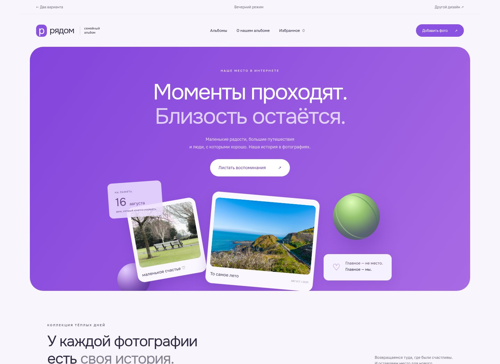
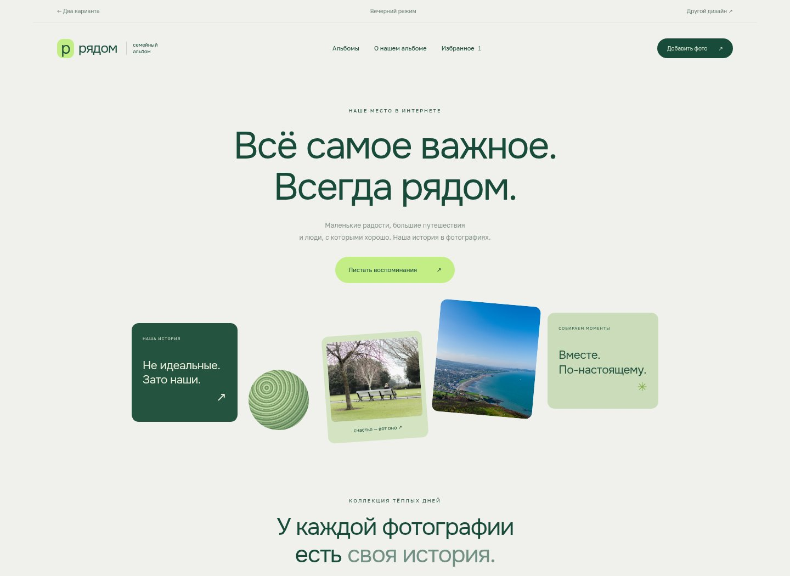

ОДНА СЕМЬЯ. ДВА НАСТРОЕНИЯ.
Два самостоятельных варианта по вашим референсам. Откройте каждый, полистайте альбомы и попробуйте добавить своё фото.

Мягкие формы, объёмные детали и фотографии как открытки.
Открыть альбом ↗
Асимметричная композиция, шалфей и спокойный ритм.
Открыть альбом ↗Внутри есть вечерний режим. Свои фотографии и избранное сохраняются в этом браузере и доступны в обоих вариантах. Для доступа с других устройств потребуется сервер.